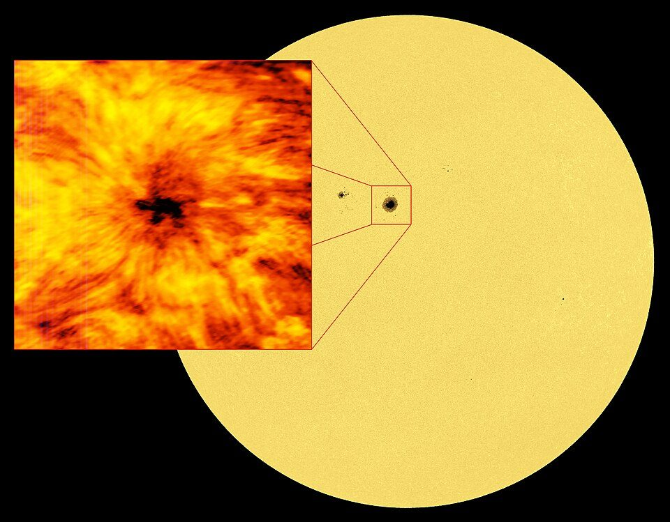

The Sun
An ordinary star that, 150 million kilometres away, gives us light, warmth and the energy behind almost all life on Earth.


The Sun is a G-type star, what astronomers call a yellow dwarf, although its light is actually white: Earth's atmosphere tints it yellow. It is a sphere of plasma 1.39 million kilometres across, so large that 1.3 million Earths would fit inside.
A natural nuclear reactor
In its core, at around 15 million degrees, hydrogen fuses into helium. Every second the Sun converts some 600 million tonnes of hydrogen into helium, and about 4 million tonnes of that mass turn into energy, exactly as Einstein's famous formula, E = mc², predicts.
That energy takes a very long time to get out. Photons bounce around inside the radiative zone for tens of thousands of years, perhaps more than 100,000, before reaching the convective zone, where hot gas rises and sinks like boiling water. From the surface, light needs only 8 minutes and 20 seconds to reach Earth.
The layers of the Sun
- Core: where fusion happens, at 15 million °C.
- Radiative zone: energy moves outwards by being absorbed and re-emitted.
- Convective zone: currents of gas carry heat towards the surface.
- Photosphere: the visible "surface", at about 5,500 °C.
- Chromosphere: a reddish layer best seen during eclipses.
- Corona: the outer atmosphere, which puzzlingly reaches more than a million degrees.

.jpg){kind=link}
Spots, flares and storms
Solar activity follows a cycle of about 11 years. At maximum, many sunspots appear: cooler, darker regions threaded by intense magnetic fields. When those fields suddenly reconnect they release flares and coronal mass ejections, clouds of billions of tonnes of plasma flung into space.
If one of those clouds reaches Earth it triggers geomagnetic storms and spectacular auroras, but it can also damage satellites and power grids. In 1859 the Carrington event made telegraph lines spark, and auroras were seen almost in the tropics. In May 2024, auroras were visible as far south as Spain.


Solar eclipses
By a cosmic coincidence, the Sun is about 400 times larger than the Moon but also about 400 times farther away. So from Earth they look almost the same size, and the Moon can cover it completely. Spain will see a total eclipse on 12 August 2026 and another on 2 August 2027.


The Sun's future
The Sun has been shining for 4.6 billion years and has about 5 billion left. When the hydrogen in its core runs out it will swell into a red giant, swallowing Mercury and Venus and perhaps Earth. Then it will shed its outer layers, leaving a Earth-sized white dwarf that will cool for billions of years.
Videos to understand it better
- What Happens If We Bring the Sun to Earth?Kurzgesagt – In a Nutshell · 12.8M views
- The Deepest We Have Ever Seen Into the Sun | SDO 4KAstrum · 11.5M views
Videos are from YouTube and belong to their creators. They only load when you click them. See all videos →